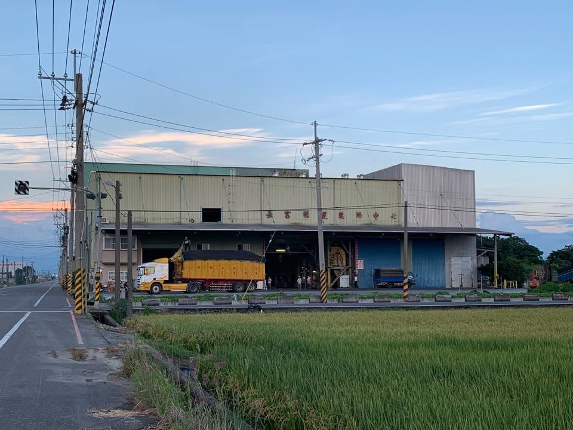
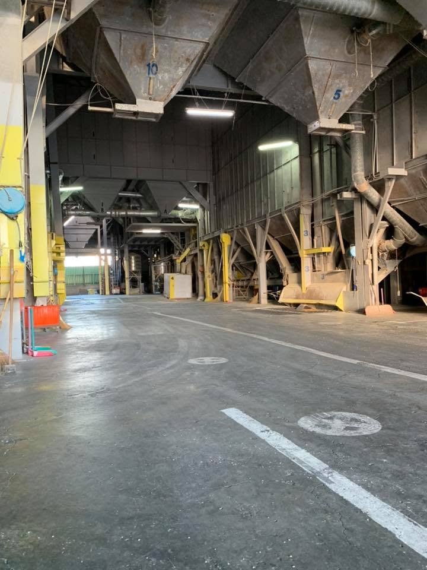
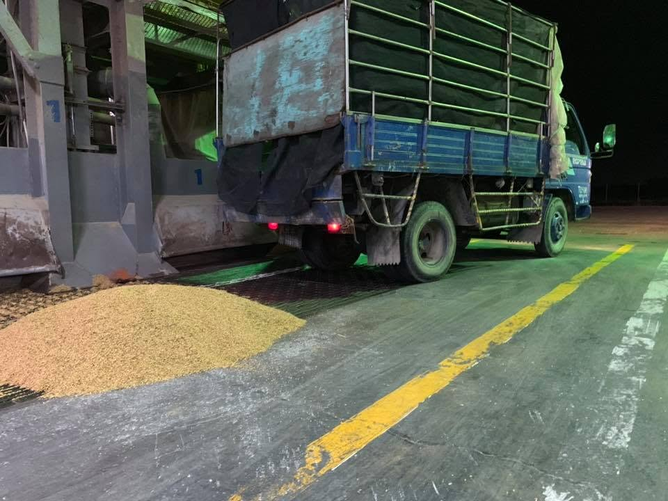

精密恆溫控制
24 小時電腦自動監控烘乾溫度，避免過熱導致米質劣變，確保含水率均勻穩定，達到良質米標準。
長富稻穀乾燥中心座落於嘉義縣朴子市，引進自動化恆溫乾燥設備，致力於解決收穫期間濕穀處理的難題。我們透過科學數據監控每一批稻米的水分，結合多年實務經驗，確保產出最高品質的產品，讓農友安心交付、放心收穫。
剛收割的濕穀含水率往往超過 25%，若放置超過 12 小時就會「發燒」黴變。長富以低溫循環慢烘，讓水分緩慢均勻地離開每一粒米——捲動頁面，看看含水率如何一步步降到良質米標準。
三個核心能力，守住從收穀到出穀的每一個環節。
24 小時電腦自動監控烘乾溫度，避免過熱導致米質劣變，確保含水率均勻穩定，達到良質米標準。
模擬自然風乾效果，低溫慢速帶走濕氣，保留每一粒米最飽滿的口感與營養價值。
提供代工烘乾、專業水分檢測服務，協助農友在收成關鍵時刻事半功倍，安心交穀。
眼見為憑——看看您的稻穀將在什麼樣的環境被細心照料。



從收穀到交付，每一步都有專業把關，讓您安心託付。
農友將濕穀送至工廠，我們即時秤重登記
精密儀器量測初始含水率，制定烘乾參數
恆溫循環慢烘 8-12 小時，全程電腦監控
複檢含水率達 14.5%-15%，確保符合良質米標準
烘乾完成通知取穀，秤重結算費用
收集農友最常詢問的問題，幫助您更了解稻穀烘乾的重要知識。
濕穀堆積會產生熱能導致「發燒」。若未及時烘乾，稻米容易黴變影響品質與收購價。建議收割後盡速送至乾燥中心處理。
良質米標準約在 14.5% - 15% 之間。含水率過高容易發霉，過低則影響口感與重量。長富精密設備確保每一粒米都處於黃金比例。
視濕穀的初始含水率與數量而定，一般低溫循環烘乾約需 8 至 12 小時。我們堅持慢烘，確保米質不受損。
一期稻（春作）收割時正值梅雨季，濕穀含水率較高，需更長烘乾時間。二期稻（秋作）天氣較乾燥，含水率相對較低，烘乾速度較快。兩者均需根據實際含水率調整烘乾參數。
您可以撥打辦公室電話 05-3691048，或聯繫負責人手機 0931-721-448。工廠地址為嘉義縣朴子市 129 之 42 號。
收穫旺季請提早聯繫，我們為您預留烘乾機台。